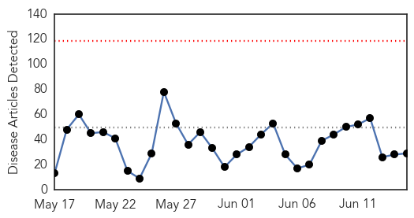
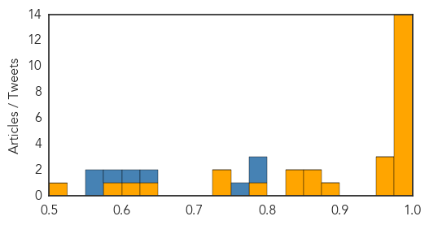
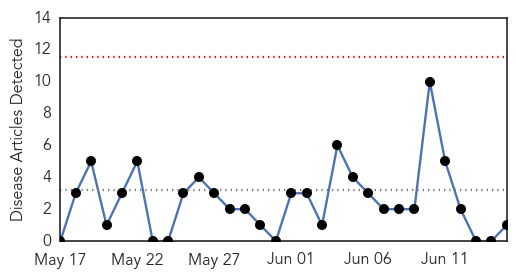

Ebola
30-Day Web Trend
0 alerts, 0 warnings

30-Day Twitter Trend
0 alerts, 0 warnings

Article Locations

Article Confidences
Top Articles:
- 0.998
- 'We are still making the same mistakes,' MSF
- 0.998
- Another Ebola flare-up possible
- 0.997
- French hospital hit by second Ebola scare
- 0.997
- 'Ebola could hit again and we would hardly do better'
- 0.997
- Ebola could hit again and we would hardly do better, says MSF head
- 0.996
- Ebola Spikes again in Guinea, Sierra Leone — Naharnet
- 0.996
- PH still not ready for viral contagion
- 0.995
- As Others See It: Fighting a disease outbreak, again
- 0.991
- MERS outbreak: 3 lessons Canada learned from SARS
- 0.990
- Second French patient admitted to hospital with suspected Ebola in a week
- 0.989
- French hospital hit by second Ebola scare
- 0.985
- Singapore nurse joined fight against Ebola, Singapore News & Top Stories
- 0.985
- Ebola can linger in the eyes of survivors, Aussie researcher finds
- 0.979
- Stigma leaves Liberia’s Ebola workers high and dry
- 0.970
- ACT Alliance Appeal: Post-Ebola Recovery Program in Liberia
- 0.966
- Monkeying around with an Ebola vaccine
- 0.951
- Doctor who fought Ebola inspires Academy of Notre Dame grads
- 0.892
- Ebola survivor Nancy Writebol is returning to Liberia
- 0.870
- Researchers link Ebola news coverage to public panic using Google, Twitter data
- 0.860
- Ebola in Sierra Leone: 'Remind people not to forget about us, the survivors'
- 0.845
- Queen Honours British Citizens who turned Ebola Heroes in Sierra Leone
- 0.828
- Sailors from RNAS Culdrose in Helston to receive medals for fight against ebola in Sierra Leone
- 0.796
- A Call to Scale-Up Community Health Workers
- 0.750
- Parliament Ratifies Public Emergency Regulations for Another 90 Days
- 0.727
- Ebola nightmare haunt Motswana hero
- 0.640
- President Sirleaf Applauds Russia on Russia Day
- 0.621
- Sirleaf confident in Liberia’s growth post Ebola
- 0.587
- WTVM.com-Columbus, GA News Weather & Sports
- 0.523
- Connecticut city settles Ebola lawsuit for $30,000
Top Tweets:
- 0.975
- MERS vs Ebola: Similarities and differences - CCTV http://t.co/LpKgt89kxJ ebola EVD
- 0.949
- Is Ebola flaring up again in West Africa? - Healthcare Global http://t.co/0m56zYaluz ebola EVD
- 0.942
- Freetown Market Traders: “Business Was Difficult For Us During Ebola ... - Ebola Deeply http://t.co/hghuiUxHjY ebola EVD
- 0.856
- Ebola bounces back in Guinea, Sierra Leone: Health authorities repeating mistakes in fight, says MSF http://t.co/MF14JSHDEx AUsummit
- 0.854
- Ebola survivor Nancy Writebol is returning to Liberia - Daily Mail http://t.co/IcMs4uzLIO ebola EVD
- 0.828
- Battling barriers in Ebola vaccine - The University of Hawaii Kaleo http://t.co/EHlPUPuJen ebola EVD
- 0.808
- Ebola Virus Spreading From Escaped QuarantinePatients and BurialRituals http://t.co/L4mux05mAj via
- 0.742
- MAP. Kambia, Sierra Leone, Forecariah, Guinea: Ebola Confirmed Villages for the last 21 days, June 11, 2015 https://t.co/bSlnSQz28k
- 0.740
- Last Ebola health worker infections in Guinea, SierraLeone reported on 6 April & 14 May respectively EbolaResponse http://t.co/DMRZjHHzD7
- 0.733
- Ebola could hit again and we would hardly do better, says MSF head - Fox News http://t.co/k9ldwxAURe ebola EVD
- 0.676
- MERS vs Ebola: Similarities and differences - CCTV http://t.co/uPT6qdMY37
- 0.635
- Federal money will help Washington state prepare for Ebola, other diseases - Puget Sound Business ... http://t.co/NRUcSiUcdY ebola EVD
- 0.629
- 15 June news overview on avianflu avianinfluenza Ebola EbolaResponse MERS http://t.co/DhHPdIeJIA
- 0.627
- Video. Gettingtozero ebola https://t.co/O926xLmpn7
- 0.579
- RT: Since the start of the outbreak 2,449 patients have recovered from Ebola in centres. Great partners, great work http://t.…
- 0.566
- Ebola: La phase finale de la lutte contre une épidémie est toujours la plus difficile http://t.co/nvPXoFSVoD
- 0.522
- RT: Ebola: La phase finale de la lutte contre une épidémie est toujours la plus difficile http://t.co/nvPXoFSVoD
- 0.518
- Since the start of the outbreak 2,449 patients have recovered from Ebola in centres. Great partners, great work http://t.co/1uOFJvCbwT
Hepatitis
30-Day Web Trend
0 alerts, 0 warnings

30-Day Twitter Trend
0 alerts, 0 warnings

Article Locations

Article Confidences

Top Articles:
Top Tweets:
-
No tweets found for Jun 15, 2015